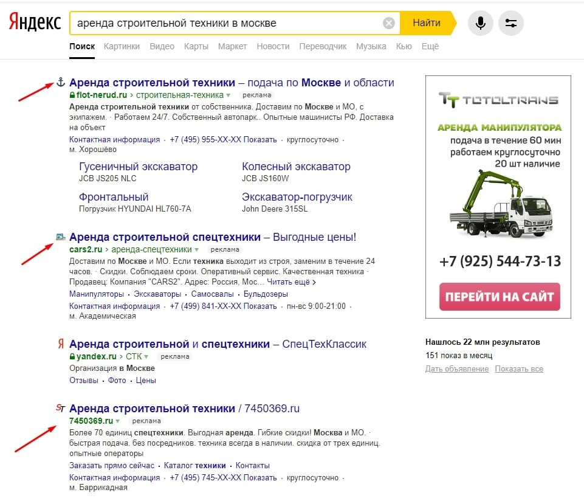
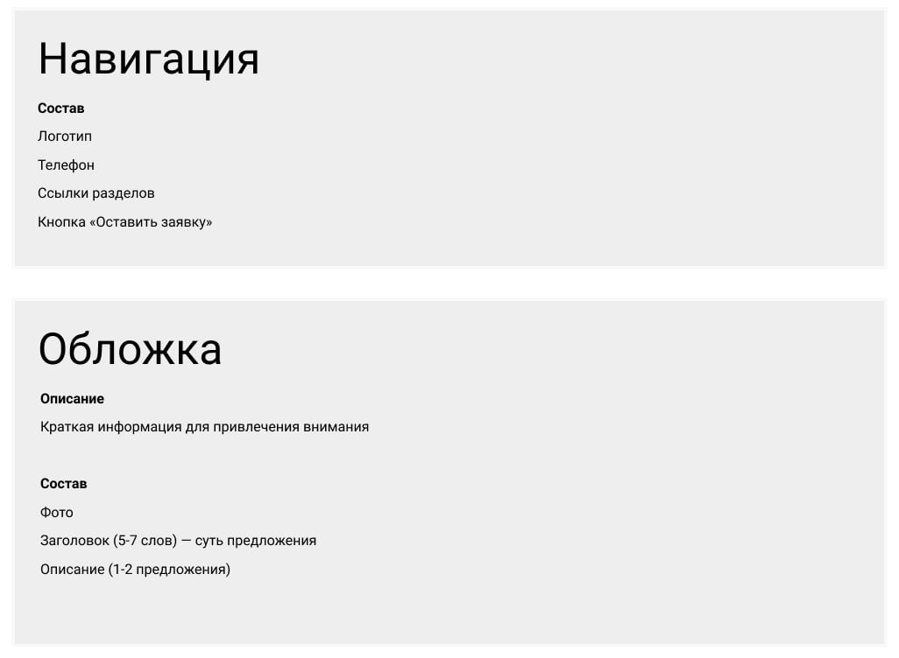
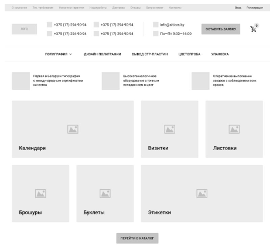

Этапы разработки
Хороший дизайн начинается не с рисования в графическом редакторе, а с проектирования и анализа. В этой статье я расскажу вам про основные этапы разработки дизайна сайта, благодаря которым вы сможете создавать рабочие дизайн-макеты.
Очень часто, начинающие дизайнеры теряются, когда заказчик просит их создать дизайн сайта. Они впопыхах открывают графический редактор и начинают судорожно рисовать дизайн из головы. Потом получают миллион правок, и вся работа сводится к бесконечным исправлениям.
Совсем другое дело, когда вы четко знаете и понимаете все основные этапы создания дизайна сайта и следуете этому плану. Каждый этап вы согласуете с заказчиком и всегда можете аргументировать свои дизайн-решения. Таким образом вы избавляете себя от многочисленных правок и выглядите в глазах заказчика настоящим профессионалом своего дела.
Этапы разработки дизайна сайта
Первое с чего начинается разработка любого дизайна сайта — это бриф, поэтому с него и начнем.
Этап 1 — Бриф
Бриф — это определенный список вопросов, которые вы задаете заказчику, чтобы понять, чем он вообще занимается и какой дизайн хочет по итогу получить. На этапе брифа никто никому ничего не обязан. То есть это просто ваше знакомство друг с другом. На этом этапе вы можете легко отказаться от работы над проектом заказчика, или заказчик может отказаться от работы с вами.
Обычно в бриф включены вопросы по типу:
Контакты заказчика
Информация о компании
Какой сайт планируется разработать?
Какая целевая аудитория?
Какая структура должна быть у сайта?
Предпочтения по дизайну (цвет, стиль и т.д.)
Какие цели у будущего сайта?
Какие имеются конкуренты?
И другое
По этой ссылке я оставлю пример брифа, который вы можете адаптировать под себя. Брифовать (опрашивать) клиента лучше всего через созвон (например, в skype). Так вы сможете ближе познакомиться с клиентом и проникнуться доверием друг к другу.
Но если у вас живое общение вызывает дискомфорт, то можно отправить заказчику на электронную почту файл с брифом и попросить его заполнить. А после, попросить переслать вам обратно уже заполненный бриф.
Помимо брифа есть еще такое понятие как ТЗ (Техническое Задание). Оно составляется на основе брифа, то есть там прописывается вся структура будущего сайта и все требования к дизайну. Кто-то разделяет эти два этапа, но можно их объединить и на этапе брифа сразу проговорить все необходимые моменты.
Когда у вас на руках уже есть заполненный бриф, где все подробно прописано какой сайт и дизайн хочет заказчик, то вам осталось его еще раз согласовать с заказчиком и двигаться дальше.
Согласовывайте значимые этапы с заказчиком, чтобы потом между вами не было недопониманий.
Бриф актуален тогда, когда вы фрилансер и работаете сами на себя. Если вы работаете в компании, то брифовать клиента будут другие люди (скорей всего менеджер проекта).
Этап 2 — Анализ ниши и конкурентов
После согласования брифа и переходу ко второму этапу вы уже вступаете в коммерческие отношения со своим заказчиком. То есть здесь вы уже несете ответственность за всю последующую работу, поэтому на этапе брифа вы должно четко определиться — работаете над проектом или нет.
Если да, то обговариваете сроки и процесс оплаты и начинаете анализировать нишу и конкурентов. Этот этап является одним из наиболее важных, потому что при грамотном его выполнении он облегчит вам последующую работу.
Ваша задача — погрузиться в бизнес заказчика и понять, хотя бы примерно, как там все устроено. Далее — проанализируйте 5-10 ближайших конкурентов и выделить их слабые и сильные стороны. Посмотрите на структуру их сайтов, какие они используют блоки и каким образом преподносят информацию.
Где брать конкурентов? Во-первых, ваш заказчик может указать их в брифе. Во-вторых, можно зайти на Яндекс и вбить в поиск нишу клиента (например, аренда строительной техники в Москве). В выдаче у вас появятся сайты конкурентов их и анализируйте.
Все данные записывайте на какой-нибудь носитель (бумага или Word/Excell), чтобы ничего не забыть. Если в ходе анализа у вас будут возникать вопросы, то спрашивайте их у заказчика. Заказчик 100% знает свой бизнес лучше, чем вы, поэтому диалог только приветствуется.
Зачем вообще нужен этот анализ? Затем, чтобы не изобретать велосипед, потому что до вас 100% кто-то уже разрабатывал подобные проекты. Ваша задача, как дизайнера, сделать продукт своего клиента лучше, а не наоборот. Поэтому нужно опираться на чужой опыт и улучшать его.
По итогу второго этапа вы должны примерно понимать специфику бизнеса и у вас должны быть записи с анализом ближайших конкурентов.
Этап 3 — Проектирование
На этом этапе вы начинаете проектировать будущие блоки сайта, опираясь на бриф и конкурентный анализ. Здесь вам не нужно ничего рисовать. Ваша задача описать основные блоки сайта и какой контент в них будет находиться.
Выглядеть это может примерно так:

По-другому это можно назвать информационной архитектурой. Важно понимать, что при разработке финального дизайна вы в каких-то местах можете отступать от вашего изначального проектирования.
Этот этап нужен для понимания того, что вообще должно находиться на сайте. Как и в какой вариации это будет выглядеть в конечном дизайне — дело десятое. Проектировать можно как в графическом редакторе, так и на обычном листе.
В редакторе, конечно, удобней, потому что при дальнейшей разработке сайта у вас будет все в одном месте. Но если под рукой нет компьютера, то вполне можно обойтись обычным листом бумаги.
По итогу третьего этапа у вас должна быть спроектирована вся структура будущего сайта.
Этап 4 — Сбор референсов
После того, как со структурой вы закончили, самое время немного вдохновиться для дальнейшей работы. В этом нам помогут референсы, то есть работы других дизайнеров.

Сбор референсов можно разделить на 2 этапа:
Референсы по вашей теме
Референсы по любой другой теме
В первом случае, референсы по нашей теме будут помогать нам в составлении будущей стилистики нашего дизайна. Это стоит делать если в брифе клиент оставил этот пункт на усмотрение дизайнера.
Если же в брифе клиент расписал будущую стилистику до мелочей (шрифты, цвета, формы и так далее), то тогда все исходные данные берите из брифа. Если нет, то с помощью референсов по вашей теме вы сможете определиться со стилистикой.
Например, если взять 5 сайтов из fashion индустрии, то можно заметить, что на 4 из них в дизайне используются шрифты с засечками, формы кнопок и других элементов выполнены в строгом стиле, а цветовая палитра — преимущественно пастельных тонов. Соответственно вам можно придерживаться именно такой стилистики, если разрабатываете дизайн для fashion проекта.
Помимо этого, вы можете брать референсы по любой другой теме и искать наиболее удачные дизайн-решения, которые можно адаптировать под ваш проект. Таким образом вы вдохновитесь на работу и у вас будет примерная картина того, какая композиция будет в вашем дизайне и каким образом будут скомпонованы элементы друг с другом.
Этап 5 — Прототип
С готовыми реферансами можно начинать разработку прототипа будущего сайта. Прототип — это промежуточный вариант между финальным дизайном и спроектированной структурой. Он уже имеет вид готового сайта, но без детальной проработки.
Во время создания прототипы вы уже работаете непосредственно с композицией и компоновкой, подбираете шрифты.
Выглядеть прототип может примерно следующим образом:
Это достаточно детализированный прототип, которому осталось только добавить цвета и картинки, и финальный дизайн будет готов. Но такой детализированный прототип совсем не обязателен, можно делать немного попроще.
В прототипе вы можете:
- Вместо картинок рисовать обычные прямоугольники или круги
- Вместо иконок делать условные обозначения в виде обычных квадратов
- Не придерживаться строгих отступов
Вместо картинок рисовать обычные прямоугольники или круги. Вместо иконок делать условные обозначения в виде обычных квадратов
Не придерживаться строгих отступов. Все это можно доработать в финальном дизайне. Прототип нужен для того, чтобы можно было наглядно увидеть, как примерно будет выглядеть конечный дизайн.
Этап 6 — Финальный дизайн
Вот мы и подошли непосредственно к самому дизайну в его привычном понимании. Как видите, работа дизайнера — это 80% анализа и проектирования и лишь 20% самого дизайна.
На этом этапе вам нужно добавить цвета в ваш прототип, выровнять все строго по сетке и подкорректировать отступы, добавить картинки и иконки туда, где они должны быть.
В процессе финального дизайна вы можете немного отступать от прототипа в пользу каких-то более эстетически привлекательных дизайн-решений. Но не сильно, потому что предыдущий этап у вас согласован с заказчиком, и он рассчитывает примерно на тот результат, который с ним согласовали.
После того, как у вас готов финальный дизайн вы можете сделать небольшую анимацию интерфейса, чтобы лучше «продать» готовый дизайн заказчику. Этот пункт не обязателен, но он очень хорошо создаст wow-эффект.
После согласования вам осталось подготовить ваш дизайн для передачи его в разработку. Этап 7 — Подготовка дизайна для разработки
На этом этапе вам нужно максимально упростить работу для разработчика, чтобы он не обращался к вам с кучей вопросов. Таким образом вы сэкономите время и себе и разработчику.
Что нужно сделать?
Во-первых, подготовьте небольшой стайл-гайд (UI-kit) вашего дизайна. Укажите какие цвета вы использовали в дизайне, какие шрифты и их начертания, различные UI-элементы и их состояния. То есть, чтобы разработчик не гадал, как будет вести себя кнопка при наведении и так далее. Вообще стайл-гайд (UI-kit) следует формировать еще на этапе прототипа, чтобы потом вам было проще работать. В зависимости от проекта, стайл-гайды могут быть простенькими (как на фото выше), так и более объемными (при разработке сложных интерфейсов).
Во-вторых, подготовьте все картинки и фотографии, которые вы использовали на сайте. Заранее позаботьтесь о том, чтобы уменьшит их вес, потому что чем «легче» картинки, тем быстрее грузится сайт.
Во-третьих, подготовьте для скачивания все иконки, которые вы использовали в дизайне. Иконки должны быть в формате svg.
В-четвертых, там, где вы задумывали какие-то анимации или другие поведения объектов — опишите их в комментариях или в отдельном файле. Это даст разработчику четкое понимание того, как должны вести себя элементы в дизайне.
Подготовленный дизайн отправляете заказчику, получаете свое вознаграждение за работу и на этом можно сказать, что вы выполнили свои обязательства. Вы можете еще предложить клиенту дизайн-поддержку, в рамках которой вы будете вносить какие-то изменения в дизайн на протяжении определенного периода.
=======Типы
Система типов
В PHP используется система номинальных типов с сильным поведенческим отношением подтипизации. Отношение подтипизации проверяется во время компиляции, в то время как верификация типов проверяется динамически во время выполнения.
Система типов PHP поддерживает базовые типы, которые могут быть объединены для создания объединённых типов. Некоторые из этих типов могут быть записаны как объявление типов.
>>>>>>> 05265e0a9f92a8f7df50e4468fb9d9ff4060a9de